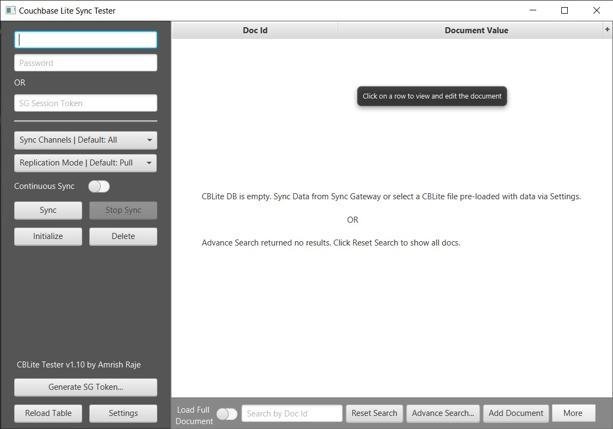
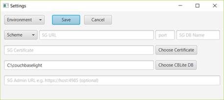
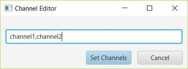
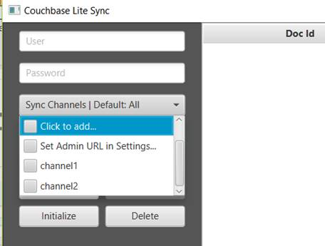
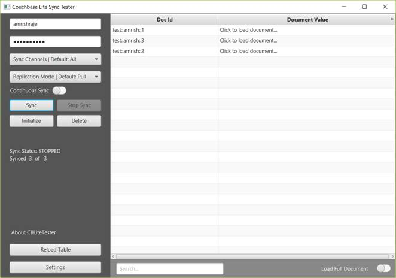
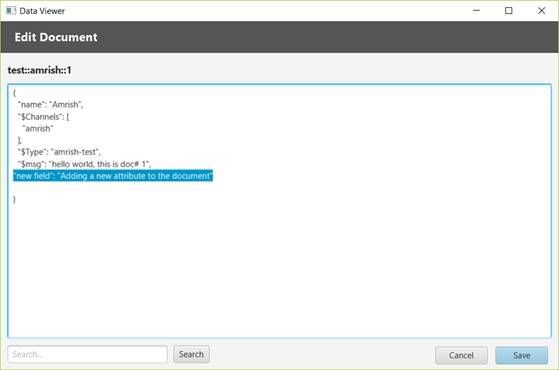
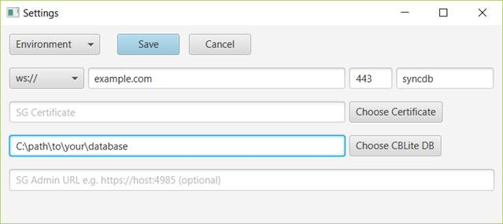
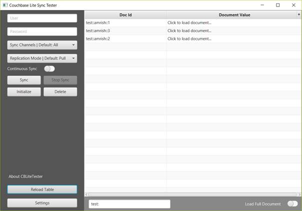
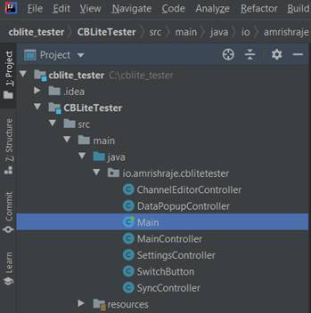

Data Synchronization is critical for enabling offline-first mobile apps – apps that regularly require network connectivity to work but are usable under conditions of poor or no network connectivity. Couchbase Sync Gateway is a key internet facing component of Couchbase Mobile stack that enables secure data synchronization across Couchbase Lite enabled clients like mobile apps. It provides a mechanism to enforce data routing, access control and authorization so that the right subset of data is synchronized with apps and users that have access to that data. The business logic behind the validation and authorization of document access is provided by the customizable Sync Gateway Sync Function.
Currently, the only way to test Sync Gateway is either by writing a custom mobile app or using the CBLite CLI tool from Couchbase Labs. Writing a custom mobile app requires a lot of work and may not be always practical in the development lifecycle of a project. CBLite CLI tool, although very useful, does not provide a way to connect to a Sync Gateway that requires SSL. Also, being a CLI tool, it may not be the most user-friendly way to work with Sync Gateway replication. In this blog, I’ll be demonstrating a new opensource tool that provides a simple way to connect to any Couchbase Sync Gateway and replicate data. It goes beyond simple data replication and provides may more features including:
· Sync with Couchbase Sync Gateway
· Support for SSL via certificate pinning
· Continuous and one-shot replication
· Support for PUSH, PULL and PUSH/PULL sync
· Ability to view and search documents replicated from Sync Gateway
· Ability to edit documents and sync them with Couchbase Server
· Support for selecting specific Sync Gateway channels to sync data with
A pre-built binary of the CBLite Tester tool can be downloaded from here. Unzip and extract the tool. Make sure Java (JRE) is installed on your computer.
C:\>java -version
java version "11.0.4" 2019-07-16 LTS
The CBLite Tester Tool can be run by either double clicking on the CBLiteTester.jar file or opening a command prompt and typing
C:\CBLiteTester-v1.1-Win\CBLiteTester>java -jar CBLiteTester.jar

Click on Settings and type in your Sync Gateway information and click Save. Alternatively, you can select an Environment from the drop down and all Sync Gateway settings for that environment will be pre-populated.

By default, the Environments is populated with xxx,yyy. This can be replaced with your Sync Gateway settings by editing the defaults.xml file. The defaults.xml file is present in the same folder where your CBLiteTester.jar file is. The defaults file has an entry called environments which can accept a list of environments where you have sync gateways. A sample entry representing Dev and QA region could be
<entry key="environments">Dev,QA</entry>
For each environment listed in the environments section, please follow instructions in the defaults.xml file and provide entries for Sync Gateway URL, port, database, etc. This is a one-time step to setup your environment. Once done, the tool will remember your settings.
One the Sync Gateway has been configured in settings, type in your Sync Gateway credentials for the user you want to sync data with. By default, the tool syncs ALL channels that the user has access to. The default replication method is PULL replication. This can be changed by choosing the appropriate replication method from the Replication Mode drop down. The tool also allows you to specify channels that you want to sync with. Click on the Sync Channels drop down and click on “Click to add…”. This will open up a channel editor window. Type in a list of channels you wish to sync with as a comma separated list and click ‘Set Channels’.

Now, if you click on Sync Channels drop down, you should see a list of your channels. Check the channels you wish to sync with.

If you provided your Sync Gateway Admin URL in settings (SG Admin URL field) and if your Sync Gateway Admin API is exposed outside of the Sync Gateway machine, then the Sync Channels drop down should automatically pull all channels that a user has access to. Note that exposing Sync Gateway Admin API outside the machine on which SG is running is NOT recommended and is quite dangerous as anyone can access your data via the Admin APIs. You may put a reverse proxy like NGINX in front of SG to protect it or use SSH Tunneling. If your sync gateway Admin URL requires authentication, it can be supplied by adding below property in config.xml file
<entry key="sgAdminAuth">Basic encodedCredentials</entry>
To sync data, click on Sync.

Data for the user and specified channel will be synced to the tool. Note that the user must be setup in sync gateway to have access to the channels they are requesting data for. Click on any document to open it. You may also click on the ‘Load Full Document’ toggle at the bottom right corner to load all documents at once. Note that this will take some time if you have thousands of documents!
You can search for any documents by typing in the Document ID in the search box.
You may also open a document and edit it in the doc editor and sync it back to the server. Click on any document to open it. In the editor window, you will see that the document is displayed in a JSON format just like you would see it in the Couchbase Console. Make desired changes and click Save. You may change or add any new attributes to the document if it is a valid JSON.

Any changes to the document, will be locally saved to the CBLite Database. To sync the changes back to the server, make sure you select the replication mode as Push or ‘Pull and Push’. Click sync.
Continuous Sync Mode can also be enabled by clicking on the Continuous Sync toggle.
The Delete button can be used to delete the local CBLite Database. Note: Deleting the CBLite Database will NOT delete the documents on the server even if you click Sync or Continuous Sync is on.
The Initialize button can be used to re-initialize the local CBLite database by downloading all documents from the server again. If you change the user and click Initialize, the data for previous user is deleted from the local CBLite DB and data for the new user is Synced and displayed in the table.
You can load an existing CBLite database file (dbname.cblite2) downloaded from a mobile device, or created using Couchbase CBLite CLI tool in the CBLite Tester tool. Launch the tool and click settings. Click the ‘Choose CBLite DB’ button and point to the folder containing your *.cblite2 file. Note: Do not point to the cblite2 folder itself, but point to the folder containing it. Also, ensure that the name of the cblite2 file is the same as the name of your database. In this example, the database name is syncdb and the tool will expect the CBLite database file to be called syncdb.cblite2.

Click on Save to save the settings. Then click Reload Table to load the new CBLite Database to the Table.

The CBLite Tester can also be used to create a pre-built DB image that can be deployed on a mobile app. Simply sync data with any Sync Gateway so that the tool creates a dbname.cblite2 file. Edit documents in the tool as desired and save them. All changes will be saved to the dbname.cblite2 file. Simply copy the database file to your mobile device and all the data in the file should be available in the Couchbase Lite mobile application. Future enhancements to the tool will provide ability to add new documents to CBLite DB via the tool rather than having to sync from a Sync Gateway.
CBLite Tester tool can be download from here. I’ll be using IntelliJ IDEA but you can use your IDE of choice.
c:\>mkdir C:\cblite_tester
c:\>cd cblite_tester
c:\cblite_tester>git clone https://github.com/amrishraje/CBLiteTester.git
Cloning into 'CBLiteTester'...
remote: Enumerating objects: 433, done.
remote: Counting objects: 100% (433/433), done.
remote: Compressing objects: 100% (207/207), done.
Rremote: Total 433 (delta 191), reused 371 (delta 135), pack-reused 0 85% (369/433)
Receiving objects: 100% (433/433), 94.23 KiB | 2.69 MiB/s, done.
Resolving deltas: 100% (191/191), done.
Open IntelliJ IDEA and click on “Open or Import” and point to the folder where you downloaded the code (C:\cblite_tester). IDEA should import the project automatically and you should see something like this.

Build and run Main.java via the IDE or using maven as follows
mvn javafx:run
To package the tool as a fat jar using apache shade, run the below command. This will create a CBLiteTester.jar file in the build folder.
mvn compile package